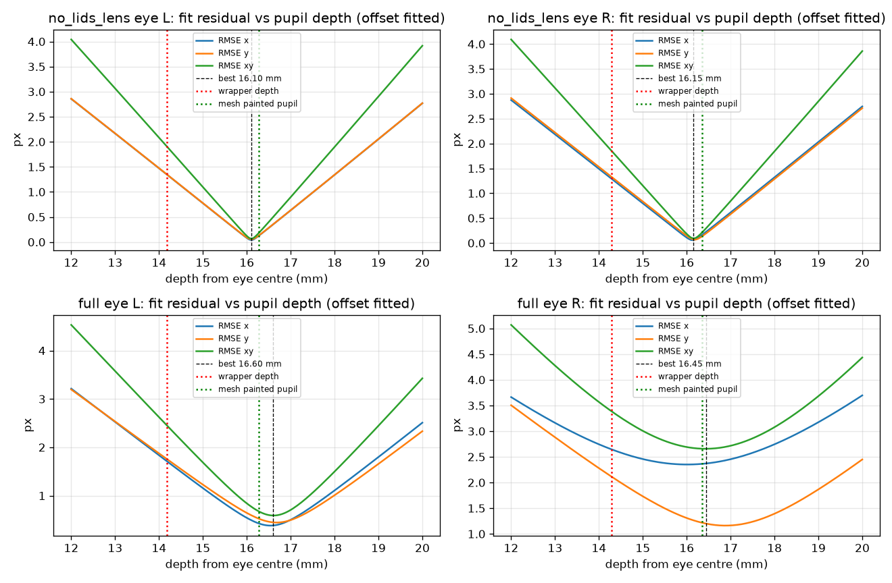
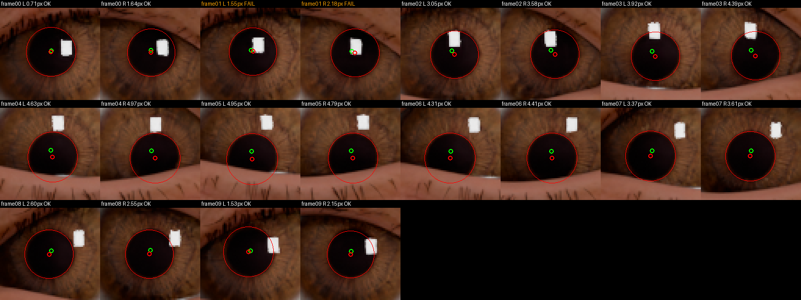
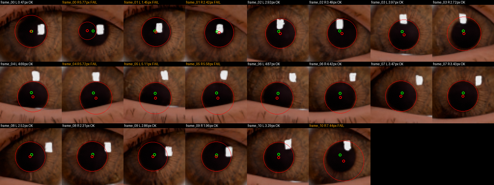
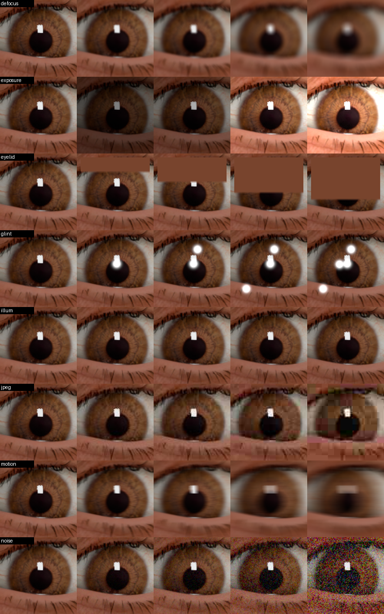
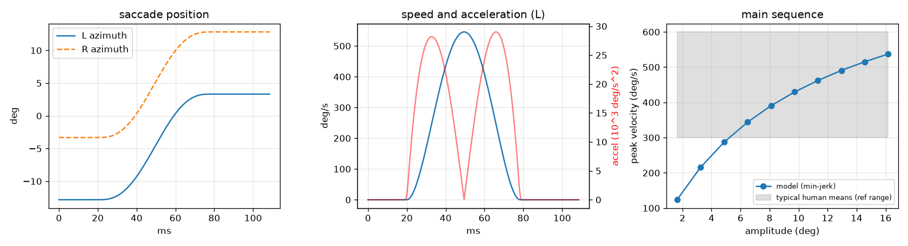
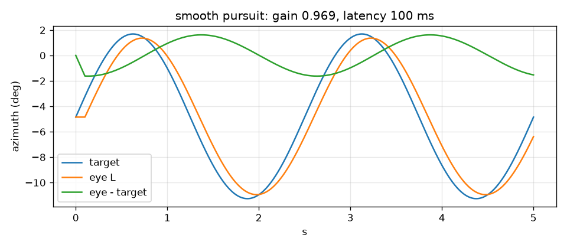
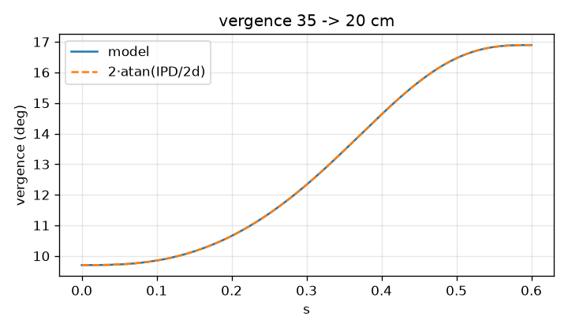
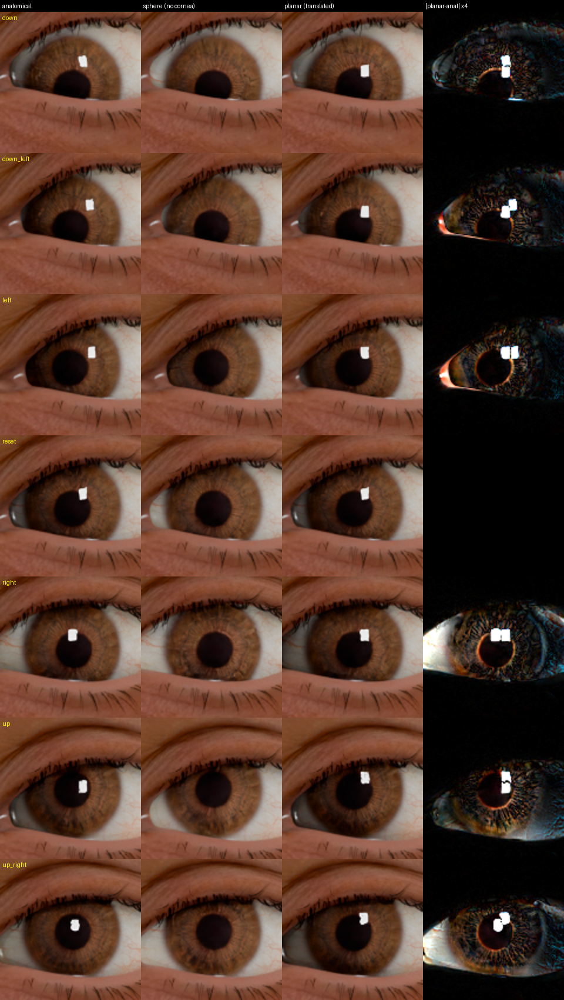
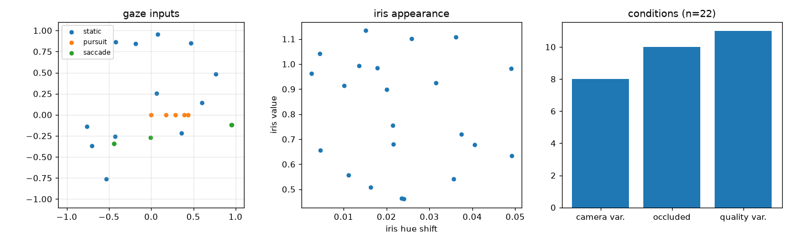

Generated 2026-11-23T02:01:17 from /Users/b.karthik/Desktop/Projects/SyntheticEyes-Track1/AUDIT/results. Every value below is read from the named file; missing files show not measured. Branch research/upgrade (post-deadline research; not part of the submitted package).
| checks passed [2026-11-23T00:52] | 40 | compliance.json → passed$ blender -b --factory-startup <bundle>/scene.blend -P research/compliance_tests.py -- AUDIT/results/compliance.json |
| checks failed [2026-11-23T00:52] | 0 | compliance.json → failed$ blender -b --factory-startup <bundle>/scene.blend -P research/compliance_tests.py -- AUDIT/results/compliance.json |
| K[R|t] vs Blender projection, max px (500 points) [2026-11-23T00:52] | 0.000198 | compliance.json → checks.name~K[R|t] vs Blender.value$ blender -b --factory-startup <bundle>/scene.blend -P research/compliance_tests.py -- AUDIT/results/compliance.json |
| camera distance from eye midpoint (m) [2026-11-23T00:52] | 0.4 | compliance.json → checks.name~camera 40 cm.value$ blender -b --factory-startup <bundle>/scene.blend -P research/compliance_tests.py -- AUDIT/results/compliance.json |
| eye L torsion, Listing's law (deg) [2026-11-23T00:52] | 0 | compliance.json → checks.name~eye L: torsion.value$ blender -b --factory-startup <bundle>/scene.blend -P research/compliance_tests.py -- AUDIT/results/compliance.json |
| no_lids_lens eye L: best-fit depth (mm) [2026-11-23T01:20] | 16.1 | ws1_depth/depth_fit.json → conditions.no_lids_lens.L.best_depth_mm$ blender ... -P research/depth_probe_extended.py -- ws1_depth/depth_probe_extended.json; render_ablation.py ... --poses heldout; python3 research/depth_fit.py ... (see research/verify_all.sh stages probe/heldout/depthfit) |
| no_lids_lens eye L: minimum on grid edge? [2026-11-23T01:20] | False | ws1_depth/depth_fit.json → conditions.no_lids_lens.L.best_depth_on_grid_edge$ blender ... -P research/depth_probe_extended.py -- ws1_depth/depth_probe_extended.json; render_ablation.py ... --poses heldout; python3 research/depth_fit.py ... (see research/verify_all.sh stages probe/heldout/depthfit) |
| no_lids_lens eye L: bootstrap 95% interval (mm) [2026-11-23T01:20] | {"p2_5": 16.05, "p50": 16.1, "p97_5": 16.15} | ws1_depth/depth_fit.json → conditions.no_lids_lens.L.bootstrap_depth_mm$ blender ... -P research/depth_probe_extended.py -- ws1_depth/depth_probe_extended.json; render_ablation.py ... --poses heldout; python3 research/depth_fit.py ... (see research/verify_all.sh stages probe/heldout/depthfit) |
| no_lids_lens eye L: mesh+UV painted-pupil depth (mm, no fit) [2026-11-23T01:20] | 16.28 | ws1_depth/depth_fit.json → conditions.no_lids_lens.L.mesh_painted_pupil_depth_mm$ blender ... -P research/depth_probe_extended.py -- ws1_depth/depth_probe_extended.json; render_ablation.py ... --poses heldout; python3 research/depth_fit.py ... (see research/verify_all.sh stages probe/heldout/depthfit) |
| no_lids_lens eye L: held-out RMSE, fitted depth + offset (px) [2026-11-23T01:20] | 0.116 | ws1_depth/depth_fit.json → conditions.no_lids_lens.L.heldout_fitted_depth_model.rmse_px$ blender ... -P research/depth_probe_extended.py -- ws1_depth/depth_probe_extended.json; render_ablation.py ... --poses heldout; python3 research/depth_fit.py ... (see research/verify_all.sh stages probe/heldout/depthfit) |
| no_lids_lens eye L: held-out RMSE, mesh painted pupil, nothing fitted (px) [2026-11-23T01:20] | 0.503 | ws1_depth/depth_fit.json → conditions.no_lids_lens.L.heldout_mesh_painted_no_fit.rmse_px$ blender ... -P research/depth_probe_extended.py -- ws1_depth/depth_probe_extended.json; render_ablation.py ... --poses heldout; python3 research/depth_fit.py ... (see research/verify_all.sh stages probe/heldout/depthfit) |
| no_lids_lens eye L: held-out RMSE vs wrapper GT (px) [2026-11-23T01:20] | 3.137 | ws1_depth/depth_fit.json → conditions.no_lids_lens.L.heldout_wrapper_gt_no_offset.rmse_px$ blender ... -P research/depth_probe_extended.py -- ws1_depth/depth_probe_extended.json; render_ablation.py ... --poses heldout; python3 research/depth_fit.py ... (see research/verify_all.sh stages probe/heldout/depthfit) |
| no_lids_lens eye R: best-fit depth (mm) [2026-11-23T01:20] | 16.15 | ws1_depth/depth_fit.json → conditions.no_lids_lens.R.best_depth_mm$ blender ... -P research/depth_probe_extended.py -- ws1_depth/depth_probe_extended.json; render_ablation.py ... --poses heldout; python3 research/depth_fit.py ... (see research/verify_all.sh stages probe/heldout/depthfit) |
| no_lids_lens eye R: minimum on grid edge? [2026-11-23T01:20] | False | ws1_depth/depth_fit.json → conditions.no_lids_lens.R.best_depth_on_grid_edge$ blender ... -P research/depth_probe_extended.py -- ws1_depth/depth_probe_extended.json; render_ablation.py ... --poses heldout; python3 research/depth_fit.py ... (see research/verify_all.sh stages probe/heldout/depthfit) |
| no_lids_lens eye R: bootstrap 95% interval (mm) [2026-11-23T01:20] | {"p2_5": 16.1, "p50": 16.15, "p97_5": 16.2} | ws1_depth/depth_fit.json → conditions.no_lids_lens.R.bootstrap_depth_mm$ blender ... -P research/depth_probe_extended.py -- ws1_depth/depth_probe_extended.json; render_ablation.py ... --poses heldout; python3 research/depth_fit.py ... (see research/verify_all.sh stages probe/heldout/depthfit) |
| no_lids_lens eye R: mesh+UV painted-pupil depth (mm, no fit) [2026-11-23T01:20] | 16.35 | ws1_depth/depth_fit.json → conditions.no_lids_lens.R.mesh_painted_pupil_depth_mm$ blender ... -P research/depth_probe_extended.py -- ws1_depth/depth_probe_extended.json; render_ablation.py ... --poses heldout; python3 research/depth_fit.py ... (see research/verify_all.sh stages probe/heldout/depthfit) |
| no_lids_lens eye R: held-out RMSE, fitted depth + offset (px) [2026-11-23T01:20] | 0.136 | ws1_depth/depth_fit.json → conditions.no_lids_lens.R.heldout_fitted_depth_model.rmse_px$ blender ... -P research/depth_probe_extended.py -- ws1_depth/depth_probe_extended.json; render_ablation.py ... --poses heldout; python3 research/depth_fit.py ... (see research/verify_all.sh stages probe/heldout/depthfit) |
| no_lids_lens eye R: held-out RMSE, mesh painted pupil, nothing fitted (px) [2026-11-23T01:20] | 0.533 | ws1_depth/depth_fit.json → conditions.no_lids_lens.R.heldout_mesh_painted_no_fit.rmse_px$ blender ... -P research/depth_probe_extended.py -- ws1_depth/depth_probe_extended.json; render_ablation.py ... --poses heldout; python3 research/depth_fit.py ... (see research/verify_all.sh stages probe/heldout/depthfit) |
| no_lids_lens eye R: held-out RMSE vs wrapper GT (px) [2026-11-23T01:20] | 3.152 | ws1_depth/depth_fit.json → conditions.no_lids_lens.R.heldout_wrapper_gt_no_offset.rmse_px$ blender ... -P research/depth_probe_extended.py -- ws1_depth/depth_probe_extended.json; render_ablation.py ... --poses heldout; python3 research/depth_fit.py ... (see research/verify_all.sh stages probe/heldout/depthfit) |
| full eye L: best-fit depth (mm) [2026-11-23T01:20] | 16.6 | ws1_depth/depth_fit.json → conditions.full.L.best_depth_mm$ blender ... -P research/depth_probe_extended.py -- ws1_depth/depth_probe_extended.json; render_ablation.py ... --poses heldout; python3 research/depth_fit.py ... (see research/verify_all.sh stages probe/heldout/depthfit) |
| full eye L: minimum on grid edge? [2026-11-23T01:20] | False | ws1_depth/depth_fit.json → conditions.full.L.best_depth_on_grid_edge$ blender ... -P research/depth_probe_extended.py -- ws1_depth/depth_probe_extended.json; render_ablation.py ... --poses heldout; python3 research/depth_fit.py ... (see research/verify_all.sh stages probe/heldout/depthfit) |
| full eye L: bootstrap 95% interval (mm) [2026-11-23T01:20] | {"p2_5": 16.35, "p50": 16.6, "p97_5": 16.9} | ws1_depth/depth_fit.json → conditions.full.L.bootstrap_depth_mm$ blender ... -P research/depth_probe_extended.py -- ws1_depth/depth_probe_extended.json; render_ablation.py ... --poses heldout; python3 research/depth_fit.py ... (see research/verify_all.sh stages probe/heldout/depthfit) |
| full eye L: mesh+UV painted-pupil depth (mm, no fit) [2026-11-23T01:20] | 16.28 | ws1_depth/depth_fit.json → conditions.full.L.mesh_painted_pupil_depth_mm$ blender ... -P research/depth_probe_extended.py -- ws1_depth/depth_probe_extended.json; render_ablation.py ... --poses heldout; python3 research/depth_fit.py ... (see research/verify_all.sh stages probe/heldout/depthfit) |
| full eye L: held-out RMSE, fitted depth + offset (px) [2026-11-23T01:20] | 0.421 | ws1_depth/depth_fit.json → conditions.full.L.heldout_fitted_depth_model.rmse_px$ blender ... -P research/depth_probe_extended.py -- ws1_depth/depth_probe_extended.json; render_ablation.py ... --poses heldout; python3 research/depth_fit.py ... (see research/verify_all.sh stages probe/heldout/depthfit) |
| full eye L: held-out RMSE, mesh painted pupil, nothing fitted (px) [2026-11-23T01:20] | 1.214 | ws1_depth/depth_fit.json → conditions.full.L.heldout_mesh_painted_no_fit.rmse_px$ blender ... -P research/depth_probe_extended.py -- ws1_depth/depth_probe_extended.json; render_ablation.py ... --poses heldout; python3 research/depth_fit.py ... (see research/verify_all.sh stages probe/heldout/depthfit) |
| full eye L: held-out RMSE vs wrapper GT (px) [2026-11-23T01:20] | 3.277 | ws1_depth/depth_fit.json → conditions.full.L.heldout_wrapper_gt_no_offset.rmse_px$ blender ... -P research/depth_probe_extended.py -- ws1_depth/depth_probe_extended.json; render_ablation.py ... --poses heldout; python3 research/depth_fit.py ... (see research/verify_all.sh stages probe/heldout/depthfit) |
| full eye R: best-fit depth (mm) [2026-11-23T01:20] | 16.45 | ws1_depth/depth_fit.json → conditions.full.R.best_depth_mm$ blender ... -P research/depth_probe_extended.py -- ws1_depth/depth_probe_extended.json; render_ablation.py ... --poses heldout; python3 research/depth_fit.py ... (see research/verify_all.sh stages probe/heldout/depthfit) |
| full eye R: minimum on grid edge? [2026-11-23T01:20] | False | ws1_depth/depth_fit.json → conditions.full.R.best_depth_on_grid_edge$ blender ... -P research/depth_probe_extended.py -- ws1_depth/depth_probe_extended.json; render_ablation.py ... --poses heldout; python3 research/depth_fit.py ... (see research/verify_all.sh stages probe/heldout/depthfit) |
| full eye R: bootstrap 95% interval (mm) [2026-11-23T01:20] | {"p2_5": 15.65, "p50": 16.45, "p97_5": 17.15} | ws1_depth/depth_fit.json → conditions.full.R.bootstrap_depth_mm$ blender ... -P research/depth_probe_extended.py -- ws1_depth/depth_probe_extended.json; render_ablation.py ... --poses heldout; python3 research/depth_fit.py ... (see research/verify_all.sh stages probe/heldout/depthfit) |
| full eye R: mesh+UV painted-pupil depth (mm, no fit) [2026-11-23T01:20] | 16.35 | ws1_depth/depth_fit.json → conditions.full.R.mesh_painted_pupil_depth_mm$ blender ... -P research/depth_probe_extended.py -- ws1_depth/depth_probe_extended.json; render_ablation.py ... --poses heldout; python3 research/depth_fit.py ... (see research/verify_all.sh stages probe/heldout/depthfit) |
| full eye R: held-out RMSE, fitted depth + offset (px) [2026-11-23T01:20] | 0.749 | ws1_depth/depth_fit.json → conditions.full.R.heldout_fitted_depth_model.rmse_px$ blender ... -P research/depth_probe_extended.py -- ws1_depth/depth_probe_extended.json; render_ablation.py ... --poses heldout; python3 research/depth_fit.py ... (see research/verify_all.sh stages probe/heldout/depthfit) |
| full eye R: held-out RMSE, mesh painted pupil, nothing fitted (px) [2026-11-23T01:20] | 0.765 | ws1_depth/depth_fit.json → conditions.full.R.heldout_mesh_painted_no_fit.rmse_px$ blender ... -P research/depth_probe_extended.py -- ws1_depth/depth_probe_extended.json; render_ablation.py ... --poses heldout; python3 research/depth_fit.py ... (see research/verify_all.sh stages probe/heldout/depthfit) |
| full eye R: held-out RMSE vs wrapper GT (px) [2026-11-23T01:20] | 3.514 | ws1_depth/depth_fit.json → conditions.full.R.heldout_wrapper_gt_no_offset.rmse_px$ blender ... -P research/depth_probe_extended.py -- ws1_depth/depth_probe_extended.json; render_ablation.py ... --poses heldout; python3 research/depth_fit.py ... (see research/verify_all.sh stages probe/heldout/depthfit) |
| eye L: wrapper (anatomical) pupil depth mm [2026-11-23T00:52] | 14.19 | ws1_depth/depth_probe_extended.json → reset_pose.L.wrapper_pupil_depth_mm$ blender -b --factory-startup <bundle>/scene.blend -P research/depth_probe_extended.py -- AUDIT/results/ws1_depth/depth_probe_extended.json --dmin 12 --dmax 20 --step 0.05 |
| eye L: painted pupil on mesh, depth mm [2026-11-23T00:52] | 16.28 | ws1_depth/depth_probe_extended.json → reset_pose.L.painted_surface_depth_along_axis_mm$ blender -b --factory-startup <bundle>/scene.blend -P research/depth_probe_extended.py -- AUDIT/results/ws1_depth/depth_probe_extended.json --dmin 12 --dmax 20 --step 0.05 |
| eye L: painted pupil lateral offset (world mm) [2026-11-23T00:52] | [0.1613, -0.0139, -0.3426] | ws1_depth/depth_probe_extended.json → reset_pose.L.painted_surface_lateral_offset_world_mm$ blender -b --factory-startup <bundle>/scene.blend -P research/depth_probe_extended.py -- AUDIT/results/ws1_depth/depth_probe_extended.json --dmin 12 --dmax 20 --step 0.05 |
| eye R: wrapper (anatomical) pupil depth mm [2026-11-23T00:52] | 14.29 | ws1_depth/depth_probe_extended.json → reset_pose.R.wrapper_pupil_depth_mm$ blender -b --factory-startup <bundle>/scene.blend -P research/depth_probe_extended.py -- AUDIT/results/ws1_depth/depth_probe_extended.json --dmin 12 --dmax 20 --step 0.05 |
| eye R: painted pupil on mesh, depth mm [2026-11-23T00:52] | 16.35 | ws1_depth/depth_probe_extended.json → reset_pose.R.painted_surface_depth_along_axis_mm$ blender -b --factory-startup <bundle>/scene.blend -P research/depth_probe_extended.py -- AUDIT/results/ws1_depth/depth_probe_extended.json --dmin 12 --dmax 20 --step 0.05 |
| eye R: painted pupil lateral offset (world mm) [2026-11-23T00:52] | [0.1572, 0.0135, -0.3418] | ws1_depth/depth_probe_extended.json → reset_pose.R.painted_surface_lateral_offset_world_mm$ blender -b --factory-startup <bundle>/scene.blend -P research/depth_probe_extended.py -- AUDIT/results/ws1_depth/depth_probe_extended.json --dmin 12 --dmax 20 --step 0.05 |
| rendered pupil-mask centroid, Lens on (the Lens material does not refract), vs analytic apparent GT (px) [2026-11-23T01:24] | {"n": 22, "mean": 2.5773, "median": 2.7571, "p95": 3.7768, "max": 3.7805, "min": 1.021} | ws3_masks/masks_metrics.json → landmark.unoccluded_refracted_centroid_vs_gt_apparent$ python3 research/gpuq.py -- blender ... -P research/masks.py -- masks && python3 research/masks_eval.py masks <bundle> AUDIT/results/ws3_masks --roi-from abl/full/frame_10.png |
| mean (dx, dy) mask - GT [2026-11-23T01:24] | {"mean_dx": 0.7718, "mean_dy": 2.2461} | ws3_masks/masks_metrics.json → landmark.bias_unoccluded_refr_minus_gt_apparent$ python3 research/gpuq.py -- blender ... -P research/masks.py -- masks && python3 research/masks_eval.py masks <bundle> AUDIT/results/ws3_masks --roi-from abl/full/frame_10.png |
| refracted mask vs unrefracted GT (px) [2026-11-23T01:24] | {"n": 22, "mean": 2.7276, "median": 2.9905, "p95": 4.2321, "max": 4.2372, "min": 0.6586} | ws3_masks/masks_metrics.json → landmark.unoccluded_refracted_centroid_vs_gt_unrefracted$ python3 research/gpuq.py -- blender ... -P research/masks.py -- masks && python3 research/masks_eval.py masks <bundle> AUDIT/results/ws3_masks --roi-from abl/full/frame_10.png |
| detector vs refracted mask centroid (px) [2026-11-23T01:24] | {"n": 20, "mean": 2.4442, "median": 0.8559, "p95": 4.3659, "max": 30.5472, "min": 0.3705} | ws3_masks/masks_metrics.json → landmark.detector_vs_unoccluded_mask_centroid$ python3 research/gpuq.py -- blender ... -P research/masks.py -- masks && python3 research/masks_eval.py masks <bundle> AUDIT/results/ws3_masks --roi-from abl/full/frame_10.png |
| mean (dx, dy) detector - mask [2026-11-23T01:24] | {"mean_dx": -1.7714, "mean_dy": 0.8039} | ws3_masks/masks_metrics.json → landmark.bias_detector_minus_unoccluded_centroid$ python3 research/gpuq.py -- blender ... -P research/masks.py -- masks && python3 research/masks_eval.py masks <bundle> AUDIT/results/ws3_masks --roi-from abl/full/frame_10.png |
| release: success rate (≤5 px) [2026-11-23T01:20] | 0.9 | release_metrics.json → success_rate$ python3 research/evaluate_detector.py release AUDIT/results <bundle> |
| release: successful pupils [2026-11-23T01:20] | 18 | release_metrics.json → n_success$ python3 research/evaluate_detector.py release AUDIT/results <bundle> |
| release: pupils [2026-11-23T01:20] | 20 | release_metrics.json → n_pupils$ python3 research/evaluate_detector.py release AUDIT/results <bundle> |
| release: MAE x px [2026-11-23T01:20] | 1.171 | release_metrics.json → on_successful.mae_x$ python3 research/evaluate_detector.py release AUDIT/results <bundle> |
| release: MAE y px [2026-11-23T01:20] | 3.079 | release_metrics.json → on_successful.mae_y$ python3 research/evaluate_detector.py release AUDIT/results <bundle> |
| release: RMSE px [2026-11-23T01:20] | 3.622 | release_metrics.json → on_successful.rmse$ python3 research/evaluate_detector.py release AUDIT/results <bundle> |
| release: median px [2026-11-23T01:20] | 3.596 | release_metrics.json → on_successful.median$ python3 research/evaluate_detector.py release AUDIT/results <bundle> |
| release: P95 px [2026-11-23T01:20] | 4.953 | release_metrics.json → on_successful.p95$ python3 research/evaluate_detector.py release AUDIT/results <bundle> |
| release: max px [2026-11-23T01:20] | 4.972 | release_metrics.json → on_successful.max$ python3 research/evaluate_detector.py release AUDIT/results <bundle> |
| release: signed bias x px [2026-11-23T01:20] | 0.465 | release_metrics.json → on_successful.mean_bias_x$ python3 research/evaluate_detector.py release AUDIT/results <bundle> |
| release: signed bias y px (+down) [2026-11-23T01:20] | 3.079 | release_metrics.json → on_successful.mean_bias_y$ python3 research/evaluate_detector.py release AUDIT/results <bundle> |
| release: max error incl. failed detections px [2026-11-23T01:20] | 4.972 | release_metrics.json → all_pupils_max_err$ python3 research/evaluate_detector.py release AUDIT/results <bundle> |
| full_roi: success rate (≤5 px) [2026-11-23T01:20] | 0.6818 | full_roi_metrics.json → success_rate$ python3 research/evaluate_detector.py --roi-from abl/full/frame_10.png full_roi AUDIT/results abl/full |
| full_roi: successful pupils [2026-11-23T01:20] | 15 | full_roi_metrics.json → n_success$ python3 research/evaluate_detector.py --roi-from abl/full/frame_10.png full_roi AUDIT/results abl/full |
| full_roi: pupils [2026-11-23T01:20] | 22 | full_roi_metrics.json → n_pupils$ python3 research/evaluate_detector.py --roi-from abl/full/frame_10.png full_roi AUDIT/results abl/full |
| full_roi: MAE x px [2026-11-23T01:20] | 1.105 | full_roi_metrics.json → on_successful.mae_x$ python3 research/evaluate_detector.py --roi-from abl/full/frame_10.png full_roi AUDIT/results abl/full |
| full_roi: MAE y px [2026-11-23T01:20] | 2.857 | full_roi_metrics.json → on_successful.mae_y$ python3 research/evaluate_detector.py --roi-from abl/full/frame_10.png full_roi AUDIT/results abl/full |
| full_roi: RMSE px [2026-11-23T01:20] | 3.344 | full_roi_metrics.json → on_successful.rmse$ python3 research/evaluate_detector.py --roi-from abl/full/frame_10.png full_roi AUDIT/results abl/full |
| full_roi: median px [2026-11-23T01:20] | 3.294 | full_roi_metrics.json → on_successful.median$ python3 research/evaluate_detector.py --roi-from abl/full/frame_10.png full_roi AUDIT/results abl/full |
| full_roi: P95 px [2026-11-23T01:20] | 4.747 | full_roi_metrics.json → on_successful.p95$ python3 research/evaluate_detector.py --roi-from abl/full/frame_10.png full_roi AUDIT/results abl/full |
| full_roi: max px [2026-11-23T01:20] | 4.875 | full_roi_metrics.json → on_successful.max$ python3 research/evaluate_detector.py --roi-from abl/full/frame_10.png full_roi AUDIT/results abl/full |
| full_roi: signed bias x px [2026-11-23T01:20] | 0.059 | full_roi_metrics.json → on_successful.mean_bias_x$ python3 research/evaluate_detector.py --roi-from abl/full/frame_10.png full_roi AUDIT/results abl/full |
| full_roi: signed bias y px (+down) [2026-11-23T01:20] | 2.857 | full_roi_metrics.json → on_successful.mean_bias_y$ python3 research/evaluate_detector.py --roi-from abl/full/frame_10.png full_roi AUDIT/results abl/full |
| full_roi: max error incl. failed detections px [2026-11-23T01:20] | 7.443 | full_roi_metrics.json → all_pupils_max_err$ python3 research/evaluate_detector.py --roi-from abl/full/frame_10.png full_roi AUDIT/results abl/full |
| no_lids_roi: success rate (≤5 px) [2026-11-23T01:20] | 0.8636 | no_lids_roi_metrics.json → success_rate$ python3 research/evaluate_detector.py --roi-from abl/full/frame_10.png no_lids_roi AUDIT/results abl/no_lids |
| no_lids_roi: successful pupils [2026-11-23T01:20] | 19 | no_lids_roi_metrics.json → n_success$ python3 research/evaluate_detector.py --roi-from abl/full/frame_10.png no_lids_roi AUDIT/results abl/no_lids |
| no_lids_roi: pupils [2026-11-23T01:20] | 22 | no_lids_roi_metrics.json → n_pupils$ python3 research/evaluate_detector.py --roi-from abl/full/frame_10.png no_lids_roi AUDIT/results abl/no_lids |
| no_lids_roi: MAE x px [2026-11-23T01:20] | 1.047 | no_lids_roi_metrics.json → on_successful.mae_x$ python3 research/evaluate_detector.py --roi-from abl/full/frame_10.png no_lids_roi AUDIT/results abl/no_lids |
| no_lids_roi: MAE y px [2026-11-23T01:20] | 3.106 | no_lids_roi_metrics.json → on_successful.mae_y$ python3 research/evaluate_detector.py --roi-from abl/full/frame_10.png no_lids_roi AUDIT/results abl/no_lids |
| no_lids_roi: RMSE px [2026-11-23T01:20] | 3.5 | no_lids_roi_metrics.json → on_successful.rmse$ python3 research/evaluate_detector.py --roi-from abl/full/frame_10.png no_lids_roi AUDIT/results abl/no_lids |
| no_lids_roi: median px [2026-11-23T01:20] | 3.471 | no_lids_roi_metrics.json → on_successful.median$ python3 research/evaluate_detector.py --roi-from abl/full/frame_10.png no_lids_roi AUDIT/results abl/no_lids |
| no_lids_roi: P95 px [2026-11-23T01:20] | 4.75 | no_lids_roi_metrics.json → on_successful.p95$ python3 research/evaluate_detector.py --roi-from abl/full/frame_10.png no_lids_roi AUDIT/results abl/no_lids |
| no_lids_roi: max px [2026-11-23T01:20] | 4.895 | no_lids_roi_metrics.json → on_successful.max$ python3 research/evaluate_detector.py --roi-from abl/full/frame_10.png no_lids_roi AUDIT/results abl/no_lids |
| no_lids_roi: signed bias x px [2026-11-23T01:20] | 0.572 | no_lids_roi_metrics.json → on_successful.mean_bias_x$ python3 research/evaluate_detector.py --roi-from abl/full/frame_10.png no_lids_roi AUDIT/results abl/no_lids |
| no_lids_roi: signed bias y px (+down) [2026-11-23T01:20] | 3.106 | no_lids_roi_metrics.json → on_successful.mean_bias_y$ python3 research/evaluate_detector.py --roi-from abl/full/frame_10.png no_lids_roi AUDIT/results abl/no_lids |
| no_lids_roi: max error incl. failed detections px [2026-11-23T01:20] | 123.1 | no_lids_roi_metrics.json → all_pupils_max_err$ python3 research/evaluate_detector.py --roi-from abl/full/frame_10.png no_lids_roi AUDIT/results abl/no_lids |
| no_lids_lens_roi: success rate (≤5 px) [2026-11-23T01:20] | 1 | no_lids_lens_roi_metrics.json → success_rate$ python3 research/evaluate_detector.py --roi-from abl/full/frame_10.png no_lids_lens_roi AUDIT/results abl/no_lids_lens |
| no_lids_lens_roi: successful pupils [2026-11-23T01:20] | 22 | no_lids_lens_roi_metrics.json → n_success$ python3 research/evaluate_detector.py --roi-from abl/full/frame_10.png no_lids_lens_roi AUDIT/results abl/no_lids_lens |
| no_lids_lens_roi: pupils [2026-11-23T01:20] | 22 | no_lids_lens_roi_metrics.json → n_pupils$ python3 research/evaluate_detector.py --roi-from abl/full/frame_10.png no_lids_lens_roi AUDIT/results abl/no_lids_lens |
| no_lids_lens_roi: MAE x px [2026-11-23T01:20] | 1.051 | no_lids_lens_roi_metrics.json → on_successful.mae_x$ python3 research/evaluate_detector.py --roi-from abl/full/frame_10.png no_lids_lens_roi AUDIT/results abl/no_lids_lens |
| no_lids_lens_roi: MAE y px [2026-11-23T01:20] | 2.894 | no_lids_lens_roi_metrics.json → on_successful.mae_y$ python3 research/evaluate_detector.py --roi-from abl/full/frame_10.png no_lids_lens_roi AUDIT/results abl/no_lids_lens |
| no_lids_lens_roi: RMSE px [2026-11-23T01:20] | 3.317 | no_lids_lens_roi_metrics.json → on_successful.rmse$ python3 research/evaluate_detector.py --roi-from abl/full/frame_10.png no_lids_lens_roi AUDIT/results abl/no_lids_lens |
| no_lids_lens_roi: median px [2026-11-23T01:20] | 3.282 | no_lids_lens_roi_metrics.json → on_successful.median$ python3 research/evaluate_detector.py --roi-from abl/full/frame_10.png no_lids_lens_roi AUDIT/results abl/no_lids_lens |
| no_lids_lens_roi: P95 px [2026-11-23T01:20] | 4.494 | no_lids_lens_roi_metrics.json → on_successful.p95$ python3 research/evaluate_detector.py --roi-from abl/full/frame_10.png no_lids_lens_roi AUDIT/results abl/no_lids_lens |
| no_lids_lens_roi: max px [2026-11-23T01:20] | 4.502 | no_lids_lens_roi_metrics.json → on_successful.max$ python3 research/evaluate_detector.py --roi-from abl/full/frame_10.png no_lids_lens_roi AUDIT/results abl/no_lids_lens |
| no_lids_lens_roi: signed bias x px [2026-11-23T01:20] | 0.836 | no_lids_lens_roi_metrics.json → on_successful.mean_bias_x$ python3 research/evaluate_detector.py --roi-from abl/full/frame_10.png no_lids_lens_roi AUDIT/results abl/no_lids_lens |
| no_lids_lens_roi: signed bias y px (+down) [2026-11-23T01:20] | 2.894 | no_lids_lens_roi_metrics.json → on_successful.mean_bias_y$ python3 research/evaluate_detector.py --roi-from abl/full/frame_10.png no_lids_lens_roi AUDIT/results abl/no_lids_lens |
| no_lids_lens_roi: max error incl. failed detections px [2026-11-23T01:20] | 4.502 | no_lids_lens_roi_metrics.json → all_pupils_max_err$ python3 research/evaluate_detector.py --roi-from abl/full/frame_10.png no_lids_lens_roi AUDIT/results abl/no_lids_lens |
| no_lids_lens_nodisp_roi: success rate (≤5 px) [2026-11-23T01:20] | 1 | no_lids_lens_nodisp_roi_metrics.json → success_rate$ python3 research/evaluate_detector.py --roi-from abl/full/frame_10.png no_lids_lens_nodisp_roi AUDIT/results abl/no_lids_lens_nodisp |
| no_lids_lens_nodisp_roi: successful pupils [2026-11-23T01:20] | 22 | no_lids_lens_nodisp_roi_metrics.json → n_success$ python3 research/evaluate_detector.py --roi-from abl/full/frame_10.png no_lids_lens_nodisp_roi AUDIT/results abl/no_lids_lens_nodisp |
| no_lids_lens_nodisp_roi: pupils [2026-11-23T01:20] | 22 | no_lids_lens_nodisp_roi_metrics.json → n_pupils$ python3 research/evaluate_detector.py --roi-from abl/full/frame_10.png no_lids_lens_nodisp_roi AUDIT/results abl/no_lids_lens_nodisp |
| no_lids_lens_nodisp_roi: MAE x px [2026-11-23T01:20] | 1.191 | no_lids_lens_nodisp_roi_metrics.json → on_successful.mae_x$ python3 research/evaluate_detector.py --roi-from abl/full/frame_10.png no_lids_lens_nodisp_roi AUDIT/results abl/no_lids_lens_nodisp |
| no_lids_lens_nodisp_roi: MAE y px [2026-11-23T01:20] | 2.527 | no_lids_lens_nodisp_roi_metrics.json → on_successful.mae_y$ python3 research/evaluate_detector.py --roi-from abl/full/frame_10.png no_lids_lens_nodisp_roi AUDIT/results abl/no_lids_lens_nodisp |
| no_lids_lens_nodisp_roi: RMSE px [2026-11-23T01:20] | 3.082 | no_lids_lens_nodisp_roi_metrics.json → on_successful.rmse$ python3 research/evaluate_detector.py --roi-from abl/full/frame_10.png no_lids_lens_nodisp_roi AUDIT/results abl/no_lids_lens_nodisp |
| no_lids_lens_nodisp_roi: median px [2026-11-23T01:20] | 2.968 | no_lids_lens_nodisp_roi_metrics.json → on_successful.median$ python3 research/evaluate_detector.py --roi-from abl/full/frame_10.png no_lids_lens_nodisp_roi AUDIT/results abl/no_lids_lens_nodisp |
| no_lids_lens_nodisp_roi: P95 px [2026-11-23T01:20] | 4.174 | no_lids_lens_nodisp_roi_metrics.json → on_successful.p95$ python3 research/evaluate_detector.py --roi-from abl/full/frame_10.png no_lids_lens_nodisp_roi AUDIT/results abl/no_lids_lens_nodisp |
| no_lids_lens_nodisp_roi: max px [2026-11-23T01:20] | 4.187 | no_lids_lens_nodisp_roi_metrics.json → on_successful.max$ python3 research/evaluate_detector.py --roi-from abl/full/frame_10.png no_lids_lens_nodisp_roi AUDIT/results abl/no_lids_lens_nodisp |
| no_lids_lens_nodisp_roi: signed bias x px [2026-11-23T01:20] | 1.086 | no_lids_lens_nodisp_roi_metrics.json → on_successful.mean_bias_x$ python3 research/evaluate_detector.py --roi-from abl/full/frame_10.png no_lids_lens_nodisp_roi AUDIT/results abl/no_lids_lens_nodisp |
| no_lids_lens_nodisp_roi: signed bias y px (+down) [2026-11-23T01:20] | 2.527 | no_lids_lens_nodisp_roi_metrics.json → on_successful.mean_bias_y$ python3 research/evaluate_detector.py --roi-from abl/full/frame_10.png no_lids_lens_nodisp_roi AUDIT/results abl/no_lids_lens_nodisp |
| no_lids_lens_nodisp_roi: max error incl. failed detections px [2026-11-23T01:20] | 4.187 | no_lids_lens_nodisp_roi_metrics.json → all_pupils_max_err$ python3 research/evaluate_detector.py --roi-from abl/full/frame_10.png no_lids_lens_nodisp_roi AUDIT/results abl/no_lids_lens_nodisp |
| no_lids_lens_flat_roi: success rate (≤5 px) [2026-11-23T01:20] | 1 | no_lids_lens_flat_roi_metrics.json → success_rate$ python3 research/evaluate_detector.py --roi-from abl/full/frame_10.png no_lids_lens_flat_roi AUDIT/results abl/no_lids_lens_flat |
| no_lids_lens_flat_roi: successful pupils [2026-11-23T01:20] | 22 | no_lids_lens_flat_roi_metrics.json → n_success$ python3 research/evaluate_detector.py --roi-from abl/full/frame_10.png no_lids_lens_flat_roi AUDIT/results abl/no_lids_lens_flat |
| no_lids_lens_flat_roi: pupils [2026-11-23T01:20] | 22 | no_lids_lens_flat_roi_metrics.json → n_pupils$ python3 research/evaluate_detector.py --roi-from abl/full/frame_10.png no_lids_lens_flat_roi AUDIT/results abl/no_lids_lens_flat |
| no_lids_lens_flat_roi: MAE x px [2026-11-23T01:20] | 1.174 | no_lids_lens_flat_roi_metrics.json → on_successful.mae_x$ python3 research/evaluate_detector.py --roi-from abl/full/frame_10.png no_lids_lens_flat_roi AUDIT/results abl/no_lids_lens_flat |
| no_lids_lens_flat_roi: MAE y px [2026-11-23T01:20] | 2.444 | no_lids_lens_flat_roi_metrics.json → on_successful.mae_y$ python3 research/evaluate_detector.py --roi-from abl/full/frame_10.png no_lids_lens_flat_roi AUDIT/results abl/no_lids_lens_flat |
| no_lids_lens_flat_roi: RMSE px [2026-11-23T01:20] | 3.003 | no_lids_lens_flat_roi_metrics.json → on_successful.rmse$ python3 research/evaluate_detector.py --roi-from abl/full/frame_10.png no_lids_lens_flat_roi AUDIT/results abl/no_lids_lens_flat |
| no_lids_lens_flat_roi: median px [2026-11-23T01:20] | 2.946 | no_lids_lens_flat_roi_metrics.json → on_successful.median$ python3 research/evaluate_detector.py --roi-from abl/full/frame_10.png no_lids_lens_flat_roi AUDIT/results abl/no_lids_lens_flat |
| no_lids_lens_flat_roi: P95 px [2026-11-23T01:20] | 4.084 | no_lids_lens_flat_roi_metrics.json → on_successful.p95$ python3 research/evaluate_detector.py --roi-from abl/full/frame_10.png no_lids_lens_flat_roi AUDIT/results abl/no_lids_lens_flat |
| no_lids_lens_flat_roi: max px [2026-11-23T01:20] | 4.136 | no_lids_lens_flat_roi_metrics.json → on_successful.max$ python3 research/evaluate_detector.py --roi-from abl/full/frame_10.png no_lids_lens_flat_roi AUDIT/results abl/no_lids_lens_flat |
| no_lids_lens_flat_roi: signed bias x px [2026-11-23T01:20] | 1.098 | no_lids_lens_flat_roi_metrics.json → on_successful.mean_bias_x$ python3 research/evaluate_detector.py --roi-from abl/full/frame_10.png no_lids_lens_flat_roi AUDIT/results abl/no_lids_lens_flat |
| no_lids_lens_flat_roi: signed bias y px (+down) [2026-11-23T01:20] | 2.444 | no_lids_lens_flat_roi_metrics.json → on_successful.mean_bias_y$ python3 research/evaluate_detector.py --roi-from abl/full/frame_10.png no_lids_lens_flat_roi AUDIT/results abl/no_lids_lens_flat |
| no_lids_lens_flat_roi: max error incl. failed detections px [2026-11-23T01:20] | 4.136 | no_lids_lens_flat_roi_metrics.json → all_pupils_max_err$ python3 research/evaluate_detector.py --roi-from abl/full/frame_10.png no_lids_lens_flat_roi AUDIT/results abl/no_lids_lens_flat |
| ws6_dataset_v1/dataset_roi: success rate (≤5 px) [2026-11-23T01:35] | 0.75 | ws6_dataset_v1/dataset_roi_metrics.json → success_rate$ research/verify_all.sh stage dataset (dataset_engine.py + validate_dataset.py + evaluate_detector.py) |
| ws6_dataset_v1/dataset_roi: successful pupils [2026-11-23T01:35] | 60 | ws6_dataset_v1/dataset_roi_metrics.json → n_success$ research/verify_all.sh stage dataset (dataset_engine.py + validate_dataset.py + evaluate_detector.py) |
| ws6_dataset_v1/dataset_roi: pupils [2026-11-23T01:35] | 80 | ws6_dataset_v1/dataset_roi_metrics.json → n_pupils$ research/verify_all.sh stage dataset (dataset_engine.py + validate_dataset.py + evaluate_detector.py) |
| ws6_dataset_v1/dataset_roi: MAE x px [2026-11-23T01:35] | 0.834 | ws6_dataset_v1/dataset_roi_metrics.json → on_successful.mae_x$ research/verify_all.sh stage dataset (dataset_engine.py + validate_dataset.py + evaluate_detector.py) |
| ws6_dataset_v1/dataset_roi: MAE y px [2026-11-23T01:35] | 2.689 | ws6_dataset_v1/dataset_roi_metrics.json → on_successful.mae_y$ research/verify_all.sh stage dataset (dataset_engine.py + validate_dataset.py + evaluate_detector.py) |
| ws6_dataset_v1/dataset_roi: RMSE px [2026-11-23T01:35] | 3.051 | ws6_dataset_v1/dataset_roi_metrics.json → on_successful.rmse$ research/verify_all.sh stage dataset (dataset_engine.py + validate_dataset.py + evaluate_detector.py) |
| ws6_dataset_v1/dataset_roi: median px [2026-11-23T01:35] | 2.95 | ws6_dataset_v1/dataset_roi_metrics.json → on_successful.median$ research/verify_all.sh stage dataset (dataset_engine.py + validate_dataset.py + evaluate_detector.py) |
| ws6_dataset_v1/dataset_roi: P95 px [2026-11-23T01:35] | 4.328 | ws6_dataset_v1/dataset_roi_metrics.json → on_successful.p95$ research/verify_all.sh stage dataset (dataset_engine.py + validate_dataset.py + evaluate_detector.py) |
| ws6_dataset_v1/dataset_roi: max px [2026-11-23T01:35] | 4.862 | ws6_dataset_v1/dataset_roi_metrics.json → on_successful.max$ research/verify_all.sh stage dataset (dataset_engine.py + validate_dataset.py + evaluate_detector.py) |
| ws6_dataset_v1/dataset_roi: signed bias x px [2026-11-23T01:35] | 0.309 | ws6_dataset_v1/dataset_roi_metrics.json → on_successful.mean_bias_x$ research/verify_all.sh stage dataset (dataset_engine.py + validate_dataset.py + evaluate_detector.py) |
| ws6_dataset_v1/dataset_roi: signed bias y px (+down) [2026-11-23T01:35] | 2.619 | ws6_dataset_v1/dataset_roi_metrics.json → on_successful.mean_bias_y$ research/verify_all.sh stage dataset (dataset_engine.py + validate_dataset.py + evaluate_detector.py) |
| ws6_dataset_v1/dataset_roi: max error incl. failed detections px [2026-11-23T01:35] | 402.6 | ws6_dataset_v1/dataset_roi_metrics.json → all_pupils_max_err$ research/verify_all.sh stage dataset (dataset_engine.py + validate_dataset.py + evaluate_detector.py) |
| schema [2026-11-23T01:20] | techtonic.research.pupil_levels/1.0 | research_pupil_levels.json → schema$ python3 research/annotate_three_level.py <bundle> AUDIT/results/ws1_depth/depth_probe_extended.json abl/full/frame_10.png AUDIT/results/research_pupil_levels.json |
| conventions [2026-11-23T01:20] | {"pixels": "origin top-left corner; x right, y down; pixel (i,j) centre at (i+0.5, j+0.5); 1024x1024", "world": "Blender metres, +Z up, face looks along -Y", "l | research_pupil_levels.json → conventions$ python3 research/annotate_three_level.py <bundle> AUDIT/results/ws1_depth/depth_probe_extended.json abl/full/frame_10.png AUDIT/results/research_pupil_levels.json |
| detector version (SHA-256) [2026-11-23T01:20] | 90ee623b4b68a04480a51911a9897b0d348f3f5c3eee9f63943cb38de1335a40 | research_pupil_levels.json → detector_sha256$ python3 research/annotate_three_level.py <bundle> AUDIT/results/ws1_depth/depth_probe_extended.json abl/full/frame_10.png AUDIT/results/research_pupil_levels.json |
| labels unchanged by all degradations [2026-11-23T01:25] | True | ws2_degradation/robustness.json → label_invariance_ok$ python3 research/degrade.py sweep <bundle> deg --seed 7 && python3 research/degrade_eval.py deg abl/full/frame_10.png AUDIT/results/ws2_degradation/robustness.json <bundle> |
| noise: per level [2026-11-23T01:25] | [{"level": "L0", "params": {"full_well_e": 4000}, "n_pupils": 20, "success_rate": 0.75, "mean_err": 5.076, "median_err": 3.723, "p95_err": 10.371, "max_err": 30 | ws2_degradation/robustness.json → results.noise$ python3 research/degrade.py sweep <bundle> deg --seed 7 && python3 research/degrade_eval.py deg abl/full/frame_10.png AUDIT/results/ws2_degradation/robustness.json <bundle> |
| motion: per level [2026-11-23T01:25] | [{"level": "L0", "params": {"length_px": 3, "angle_deg": 0}, "n_pupils": 20, "success_rate": 0.7, "mean_err": 5.004, "median_err": 3.772, "p95_err": 9.544, "max | ws2_degradation/robustness.json → results.motion$ python3 research/degrade.py sweep <bundle> deg --seed 7 && python3 research/degrade_eval.py deg abl/full/frame_10.png AUDIT/results/ws2_degradation/robustness.json <bundle> |
| defocus: per level [2026-11-23T01:25] | [{"level": "L0", "params": {"radius_px": 1}, "n_pupils": 20, "success_rate": 0.75, "mean_err": 4.997, "median_err": 3.733, "p95_err": 9.287, "max_err": 31.609, | ws2_degradation/robustness.json → results.defocus$ python3 research/degrade.py sweep <bundle> deg --seed 7 && python3 research/degrade_eval.py deg abl/full/frame_10.png AUDIT/results/ws2_degradation/robustness.json <bundle> |
| exposure: per level [2026-11-23T01:25] | [{"level": "L0", "params": {"stops": -2}, "n_pupils": 20, "success_rate": 0.5, "mean_err": 49.89, "median_err": 4.893, "p95_err": 403.331, "max_err": 404.425, " | ws2_degradation/robustness.json → results.exposure$ python3 research/degrade.py sweep <bundle> deg --seed 7 && python3 research/degrade_eval.py deg abl/full/frame_10.png AUDIT/results/ws2_degradation/robustness.json <bundle> |
| glint: per level [2026-11-23T01:25] | [{"level": "L0", "params": {"n": 1, "radius_px": 2.5, "strength": 4}, "n_pupils": 20, "success_rate": 0.8, "mean_err": 5.227, "median_err": 3.895, "p95_err": 9. | ws2_degradation/robustness.json → results.glint$ python3 research/degrade.py sweep <bundle> deg --seed 7 && python3 research/degrade_eval.py deg abl/full/frame_10.png AUDIT/results/ws2_degradation/robustness.json <bundle> |
| jpeg: per level [2026-11-23T01:25] | [{"level": "L0", "params": {"quality": 80}, "n_pupils": 20, "success_rate": 0.8, "mean_err": 4.823, "median_err": 3.756, "p95_err": 8.828, "max_err": 29.912, "m | ws2_degradation/robustness.json → results.jpeg$ python3 research/degrade.py sweep <bundle> deg --seed 7 && python3 research/degrade_eval.py deg abl/full/frame_10.png AUDIT/results/ws2_degradation/robustness.json <bundle> |
| eyelid: per level [2026-11-23T01:25] | [{"level": "L0", "params": {"frac": 0.2}, "n_pupils": 20, "success_rate": 0.85, "mean_err": 4.915, "median_err": 3.872, "p95_err": 8.754, "max_err": 30.182, "me | ws2_degradation/robustness.json → results.eyelid$ python3 research/degrade.py sweep <bundle> deg --seed 7 && python3 research/degrade_eval.py deg abl/full/frame_10.png AUDIT/results/ws2_degradation/robustness.json <bundle> |
| illum: per level [2026-11-23T01:25] | [{"level": "L0", "params": {"strength": 0.2, "angle_deg": 90}, "n_pupils": 20, "success_rate": 0.85, "mean_err": 4.908, "median_err": 3.87, "p95_err": 8.764, "m | ws2_degradation/robustness.json → results.illum$ python3 research/degrade.py sweep <bundle> deg --seed 7 && python3 research/degrade_eval.py deg abl/full/frame_10.png AUDIT/results/ws2_degradation/robustness.json <bundle> |
| mask validation passed [2026-11-23T01:24] | False | ws3_masks/masks_metrics.json → validation_ok$ python3 research/gpuq.py -- blender ... -P research/masks.py -- masks && python3 research/masks_eval.py masks <bundle> AUDIT/results/ws3_masks --roi-from abl/full/frame_10.png |
| IoU detector circle vs visible pupil [2026-11-23T01:24] | {"n": 20, "mean": 0.6463, "median": 0.6874, "p95": 0.7311, "max": 0.7465, "min": 0.0} | ws3_masks/masks_metrics.json → segmentation.iou_detector_vs_visible$ python3 research/gpuq.py -- blender ... -P research/masks.py -- masks && python3 research/masks_eval.py masks <bundle> AUDIT/results/ws3_masks --roi-from abl/full/frame_10.png |
| Dice detector vs visible pupil [2026-11-23T01:24] | {"n": 20, "mean": 0.7682, "median": 0.8147, "p95": 0.8446, "max": 0.8549, "min": 0.0} | ws3_masks/masks_metrics.json → segmentation.dice_detector_vs_visible$ python3 research/gpuq.py -- blender ... -P research/masks.py -- masks && python3 research/masks_eval.py masks <bundle> AUDIT/results/ws3_masks --roi-from abl/full/frame_10.png |
| IoU refracted vs unrefracted pupil [2026-11-23T01:24] | {"n": 22, "mean": 1.0, "median": 1.0, "p95": 1.0, "max": 1.0, "min": 1.0} | ws3_masks/masks_metrics.json → segmentation.iou_refr_vs_unrefr$ python3 research/gpuq.py -- blender ... -P research/masks.py -- masks && python3 research/masks_eval.py masks <bundle> AUDIT/results/ws3_masks --roi-from abl/full/frame_10.png |
| pupil visible fraction [2026-11-23T01:24] | {"n": 22, "mean": 0.9809, "median": 1.0, "p95": 1.0, "max": 1.0, "min": 0.8574} | ws3_masks/masks_metrics.json → visibility.visible_fraction$ python3 research/gpuq.py -- blender ... -P research/masks.py -- masks && python3 research/masks_eval.py masks <bundle> AUDIT/results/ws3_masks --roi-from abl/full/frame_10.png |
| runs (timing) [2026-11-23T01:35] | [{"started": "2026-11-22T19:59:50.961957+00:00", "finished": "2026-11-22T20:05:16.250080+00:00", "rendered": 40, "mean_render_s": 8.123}] | ws6_dataset_v1/manifest.json → runs$ blender ... -P research/dataset_engine.py -- --config research/configs_dataset_40.json --out DS |
| recorded failures [2026-11-23T01:35] | {} | ws6_dataset_v1/manifest.json → failures$ blender ... -P research/dataset_engine.py -- --config research/configs_dataset_40.json --out DS |
| provenance [2026-11-23T01:35] | {"blender": "5.3.0", "python": "3.13.13", "os": "macOS-27.0.1-arm64-arm-64bit-Mach-O", "machine": "arm64", "render_device": "METAL", "cycles_samples": 32} | ws6_dataset_v1/manifest.json → provenance$ blender ... -P research/dataset_engine.py -- --config research/configs_dataset_40.json --out DS |
| coverage [2026-11-23T01:38] | {"n_samples": 22, "planned": 22, "failures": 0, "kinds": {"static": 12, "pursuit": 5, "saccade": 5}, "gaze": {"h_range": [-0.763619, 0.955155], "v_range": [-0.7 | ws4_dataset/coverage.json → coverage$ python3 research/gpuq.py -- blender ... -P research/dataset_v2_render.py -- --config research/configs/pilot_v2.json --out DS && python3 research/dataset_v2_post.py DS |
| integrity ok [2026-11-23T01:38] | True | ws4_dataset/integrity.json → ok$ python3 research/dataset_v2_post.py DS |
| problems [2026-11-23T01:38] | [] | ws4_dataset/integrity.json → problems$ python3 research/dataset_v2_post.py DS |
| saccade example [2026-11-23T01:38] | {"amplitude_cyclopean_deg": 16.966, "duration_ms": 58.33, "peak_speed_L_dps": 545.7, "peak_speed_R_dps": 545.7, "conjugacy_max_LR_speed_diff_dps": 12.25} | ws5_dynamics/dynamics_validation.json → saccade.example$ python3 research/dynamics_validate.py AUDIT/results/ws5_dynamics |
| pursuit [2026-11-23T01:38] | {"freq_hz": 0.4, "target_amp_deg": 11.263, "measured_gain": 0.9695, "measured_latency_s": 0.1, "rms_following_error_deg": 1.1504, "max_following_error_deg": 1.6 | ws5_dynamics/dynamics_validation.json → pursuit$ python3 research/dynamics_validate.py AUDIT/results/ws5_dynamics |
| vergence [2026-11-23T01:38] | {"depth_m": [0.35, 0.2], "vergence_deg": [9.7013, 16.8945], "max_abs_error_vs_geometry_deg": 3.552713678800501e-15, "peak_vergence_velocity_dps": 23.73, "symmet | ws5_dynamics/dynamics_validation.json → vergence$ python3 research/dynamics_validate.py AUDIT/results/ws5_dynamics |
| fixation drift [2026-11-23T01:38] | {"rms_deviation_arcmin": 0.901, "max_deviation_arcmin": 2.083, "reproducible_with_seed": true} | ws5_dynamics/dynamics_validation.json → fixation$ python3 research/dynamics_validate.py AUDIT/results/ws5_dynamics |
| blink [2026-11-23T01:38] | {"total_ms": 300.0, "closing_ms": 98.0, "opening_ms": 147.0, "closing_faster_than_opening": true, "within_reference_duration": true, "rendered": false, "note": | ws5_dynamics/dynamics_validation.json → blink$ python3 research/dynamics_validate.py AUDIT/results/ws5_dynamics |
| rendered saccade: detector vs command [2026-11-23T01:59] | {"n_frames": 27, "n_missed": 0, "trajectory": [{"t": 0.0, "h": -1, "v": 0.3, "depth": 0.35, "ok": true, "xy": [[295.09466463913043, 508.10894395363596], [696.88 | ws5_dynamics/dynamics_render_check.json → saccade$ blender ... -P research/dynamics.py -- --render DYN --fps 30 --samples 16 && python3 research/dynamics_render_check.py DYN abl/full/frame_10.png AUDIT/results/ws5_dynamics/dynamics_render_check.json |
| rendered pursuit [2026-11-23T01:59] | {"n_frames": 31, "n_missed": 0, "trajectory": [{"t": 0.0, "h": 0.0, "v": 0.0, "depth": 0.35, "ok": true, "xy": [[311.2688859054211, 513.9785539806705], [713.886 | ws5_dynamics/dynamics_render_check.json → pursuit$ blender ... -P research/dynamics.py -- --render DYN --fps 30 --samples 16 && python3 research/dynamics_render_check.py DYN abl/full/frame_10.png AUDIT/results/ws5_dynamics/dynamics_render_check.json |
| rendered vergence [2026-11-23T01:59] | {"n_frames": 19, "n_missed": 0, "trajectory": [{"t": 0.0, "h": 0.0, "v": 0.0, "depth": 0.35, "ok": true, "xy": [[311.2688859054211, 513.9785539806705], [713.886 | ws5_dynamics/dynamics_render_check.json → vergence$ blender ... -P research/dynamics.py -- --render DYN --fps 30 --samples 16 && python3 research/dynamics_render_check.py DYN abl/full/frame_10.png AUDIT/results/ws5_dynamics/dynamics_render_check.json |
| rendered fixation [2026-11-23T01:59] | {"n_frames": 16, "n_missed": 0, "trajectory": [{"t": 0.0, "h": 0.001036237045317224, "v": -0.001536755118985219, "depth": 0.35, "ok": true, "xy": [[311.56412743 | ws5_dynamics/dynamics_render_check.json → fixation$ blender ... -P research/dynamics.py -- --render DYN --fps 30 --samples 16 && python3 research/dynamics_render_check.py DYN abl/full/frame_10.png AUDIT/results/ws5_dynamics/dynamics_render_check.json |
| original: sequence_s [2026-11-23T01:52] | 120.2 | ws6_performance/bench_compare.json → configs.original.sequence_s$ for c in original band persistent combined: python3 research/gpuq.py -- blender ... -P research/bench_speed.py -- bench $c; python3 research/bench_compare.py bench abl/full/frame_10.png AUDIT/results/ws6_performance/bench_compare.json |
| original: speedup_sequence_vs_original [2026-11-23T01:52] | 1 | ws6_performance/bench_compare.json → configs.original.speedup_sequence_vs_original$ for c in original band persistent combined: python3 research/gpuq.py -- blender ... -P research/bench_speed.py -- bench $c; python3 research/bench_compare.py bench abl/full/frame_10.png AUDIT/results/ws6_performance/bench_compare.json |
| original: init_s [2026-11-23T01:52] | 0.79 | ws6_performance/bench_compare.json → configs.original.init_s$ for c in original band persistent combined: python3 research/gpuq.py -- blender ... -P research/bench_speed.py -- bench $c; python3 research/bench_compare.py bench abl/full/frame_10.png AUDIT/results/ws6_performance/bench_compare.json |
| original: peak_rss_mb [2026-11-23T01:52] | 6635 | ws6_performance/bench_compare.json → configs.original.peak_rss_mb$ for c in original band persistent combined: python3 research/gpuq.py -- blender ... -P research/bench_speed.py -- bench $c; python3 research/bench_compare.py bench abl/full/frame_10.png AUDIT/results/ws6_performance/bench_compare.json |
| original: accept [2026-11-23T01:52] | True | ws6_performance/bench_compare.json → configs.original.accept$ for c in original band persistent combined: python3 research/gpuq.py -- blender ... -P research/bench_speed.py -- bench $c; python3 research/bench_compare.py bench abl/full/frame_10.png AUDIT/results/ws6_performance/bench_compare.json |
| band: sequence_s [2026-11-23T01:52] | 26.91 | ws6_performance/bench_compare.json → configs.band.sequence_s$ for c in original band persistent combined: python3 research/gpuq.py -- blender ... -P research/bench_speed.py -- bench $c; python3 research/bench_compare.py bench abl/full/frame_10.png AUDIT/results/ws6_performance/bench_compare.json |
| band: speedup_sequence_vs_original [2026-11-23T01:52] | 4.469 | ws6_performance/bench_compare.json → configs.band.speedup_sequence_vs_original$ for c in original band persistent combined: python3 research/gpuq.py -- blender ... -P research/bench_speed.py -- bench $c; python3 research/bench_compare.py bench abl/full/frame_10.png AUDIT/results/ws6_performance/bench_compare.json |
| band: init_s [2026-11-23T01:52] | 0.83 | ws6_performance/bench_compare.json → configs.band.init_s$ for c in original band persistent combined: python3 research/gpuq.py -- blender ... -P research/bench_speed.py -- bench $c; python3 research/bench_compare.py bench abl/full/frame_10.png AUDIT/results/ws6_performance/bench_compare.json |
| band: peak_rss_mb [2026-11-23T01:52] | 6552 | ws6_performance/bench_compare.json → configs.band.peak_rss_mb$ for c in original band persistent combined: python3 research/gpuq.py -- blender ... -P research/bench_speed.py -- bench $c; python3 research/bench_compare.py bench abl/full/frame_10.png AUDIT/results/ws6_performance/bench_compare.json |
| band: accept [2026-11-23T01:52] | False | ws6_performance/bench_compare.json → configs.band.accept$ for c in original band persistent combined: python3 research/gpuq.py -- blender ... -P research/bench_speed.py -- bench $c; python3 research/bench_compare.py bench abl/full/frame_10.png AUDIT/results/ws6_performance/bench_compare.json |
| persistent: sequence_s [2026-11-23T01:52] | 107.3 | ws6_performance/bench_compare.json → configs.persistent.sequence_s$ for c in original band persistent combined: python3 research/gpuq.py -- blender ... -P research/bench_speed.py -- bench $c; python3 research/bench_compare.py bench abl/full/frame_10.png AUDIT/results/ws6_performance/bench_compare.json |
| persistent: speedup_sequence_vs_original [2026-11-23T01:52] | 1.121 | ws6_performance/bench_compare.json → configs.persistent.speedup_sequence_vs_original$ for c in original band persistent combined: python3 research/gpuq.py -- blender ... -P research/bench_speed.py -- bench $c; python3 research/bench_compare.py bench abl/full/frame_10.png AUDIT/results/ws6_performance/bench_compare.json |
| persistent: init_s [2026-11-23T01:52] | 0.75 | ws6_performance/bench_compare.json → configs.persistent.init_s$ for c in original band persistent combined: python3 research/gpuq.py -- blender ... -P research/bench_speed.py -- bench $c; python3 research/bench_compare.py bench abl/full/frame_10.png AUDIT/results/ws6_performance/bench_compare.json |
| persistent: peak_rss_mb [2026-11-23T01:52] | 6971 | ws6_performance/bench_compare.json → configs.persistent.peak_rss_mb$ for c in original band persistent combined: python3 research/gpuq.py -- blender ... -P research/bench_speed.py -- bench $c; python3 research/bench_compare.py bench abl/full/frame_10.png AUDIT/results/ws6_performance/bench_compare.json |
| persistent: accept [2026-11-23T01:52] | True | ws6_performance/bench_compare.json → configs.persistent.accept$ for c in original band persistent combined: python3 research/gpuq.py -- blender ... -P research/bench_speed.py -- bench $c; python3 research/bench_compare.py bench abl/full/frame_10.png AUDIT/results/ws6_performance/bench_compare.json |
| combined: sequence_s [2026-11-23T01:52] | 17.63 | ws6_performance/bench_compare.json → configs.combined.sequence_s$ for c in original band persistent combined: python3 research/gpuq.py -- blender ... -P research/bench_speed.py -- bench $c; python3 research/bench_compare.py bench abl/full/frame_10.png AUDIT/results/ws6_performance/bench_compare.json |
| combined: speedup_sequence_vs_original [2026-11-23T01:52] | 6.821 | ws6_performance/bench_compare.json → configs.combined.speedup_sequence_vs_original$ for c in original band persistent combined: python3 research/gpuq.py -- blender ... -P research/bench_speed.py -- bench $c; python3 research/bench_compare.py bench abl/full/frame_10.png AUDIT/results/ws6_performance/bench_compare.json |
| combined: init_s [2026-11-23T01:52] | 0.82 | ws6_performance/bench_compare.json → configs.combined.init_s$ for c in original band persistent combined: python3 research/gpuq.py -- blender ... -P research/bench_speed.py -- bench $c; python3 research/bench_compare.py bench abl/full/frame_10.png AUDIT/results/ws6_performance/bench_compare.json |
| combined: peak_rss_mb [2026-11-23T01:52] | 6981 | ws6_performance/bench_compare.json → configs.combined.peak_rss_mb$ for c in original band persistent combined: python3 research/gpuq.py -- blender ... -P research/bench_speed.py -- bench $c; python3 research/bench_compare.py bench abl/full/frame_10.png AUDIT/results/ws6_performance/bench_compare.json |
| combined: accept [2026-11-23T01:52] | False | ws6_performance/bench_compare.json → configs.combined.accept$ for c in original band persistent combined: python3 research/gpuq.py -- blender ... -P research/bench_speed.py -- bench $c; python3 research/bench_compare.py bench abl/full/frame_10.png AUDIT/results/ws6_performance/bench_compare.json |
| GPU: device [2026-11-23T01:55] | METAL | ws6_performance/benchmark_gpu_scene_samples.json → device$ blender ... -P research/benchmark.py -- BG --repeats 3 |
| GPU: samples [2026-11-23T01:55] | 512 | ws6_performance/benchmark_gpu_scene_samples.json → samples$ blender ... -P research/benchmark.py -- BG --repeats 3 |
| GPU: reset_render_s [2026-11-23T01:55] | [67.01, 66.4, 66.36] | ws6_performance/benchmark_gpu_scene_samples.json → reset_render_s$ blender ... -P research/benchmark.py -- BG --repeats 3 |
| GPU: repeat_max_abs_diff_255 [2026-11-23T01:55] | [1.0, 1.0] | ws6_performance/benchmark_gpu_scene_samples.json → repeat_max_abs_diff_255$ blender ... -P research/benchmark.py -- BG --repeats 3 |
| GPU: repeat_mean_abs_diff_255 [2026-11-23T01:55] | [0.00016, 7e-05] | ws6_performance/benchmark_gpu_scene_samples.json → repeat_mean_abs_diff_255$ blender ... -P research/benchmark.py -- BG --repeats 3 |
| GPU: peak_rss_mb [2026-11-23T01:55] | 6595 | ws6_performance/benchmark_gpu_scene_samples.json → peak_rss_mb$ blender ... -P research/benchmark.py -- BG --repeats 3 |
| GPU: robustness [2026-11-23T01:55] | {"corner_1_1": [728.406, 498.422, 324.786, 496.357], "corner_1_-1": [728.409, 527.824, 324.781, 525.23], "corner_-1_1": [699.379, 498.769, 295.585, 496.008], "c | ws6_performance/benchmark_gpu_scene_samples.json → robustness$ blender ... -P research/benchmark.py -- BG --repeats 3 |
| CPU: device [2026-11-23T01:57] | CPU | ws6_performance/benchmark_cpu_64spp.json → device$ blender ... -P research/benchmark.py -- BC --cpu --samples 64 --repeats 2 |
| CPU: samples [2026-11-23T01:57] | 64 | ws6_performance/benchmark_cpu_64spp.json → samples$ blender ... -P research/benchmark.py -- BC --cpu --samples 64 --repeats 2 |
| CPU: reset_render_s [2026-11-23T01:57] | [58.51, 60.04] | ws6_performance/benchmark_cpu_64spp.json → reset_render_s$ blender ... -P research/benchmark.py -- BC --cpu --samples 64 --repeats 2 |
| CPU: repeat_max_abs_diff_255 [2026-11-23T01:57] | [1.0] | ws6_performance/benchmark_cpu_64spp.json → repeat_max_abs_diff_255$ blender ... -P research/benchmark.py -- BC --cpu --samples 64 --repeats 2 |
| CPU: peak_rss_mb [2026-11-23T01:57] | 7132 | ws6_performance/benchmark_cpu_64spp.json → peak_rss_mb$ blender ... -P research/benchmark.py -- BC --cpu --samples 64 --repeats 2 |
| results complete, none stale [2026-11-23T01:59] | True | results_check.json → ok$ python3 research/check_results.py AUDIT/results AUDIT/results/results_check.json |
| problems [2026-11-23T01:59] | [] | results_check.json → problems$ python3 research/check_results.py AUDIT/results AUDIT/results/results_check.json |
| submission integrity [2026-11-23T02:01] | True | integrity_check.json → ok$ python3 research/integrity_check.py . AUDIT/results/integrity_check.json |
| release ZIP SHA-256 [2026-11-23T02:01] | acccb548c270bfab4719c3f173eda544a1b818fd858f56b1fe2d67a07790a0dc | integrity_check.json → zip_sha256$ python3 research/integrity_check.py . AUDIT/results/integrity_check.json |
| official paths unchanged vs baseline tag [2026-11-23T02:01] | True | integrity_check.json → official_paths_ok$ python3 research/integrity_check.py . AUDIT/results/integrity_check.json |
| band: gt_identical_to_original [2026-11-23T02:01] | True | ws6_performance/band_audit.json → configs.band.0.gt_identical_to_original$ python3 research/bench_band_audit.py BENCH AUDIT/results/ws6_performance/band_audit.json |
| band: band_interior_max [2026-11-23T02:01] | 37 | ws6_performance/band_audit.json → configs.band.0.band_interior_max$ python3 research/bench_band_audit.py BENCH AUDIT/results/ws6_performance/band_audit.json |
| band: band_interior_mean [2026-11-23T02:01] | 0.7915 | ws6_performance/band_audit.json → configs.band.0.band_interior_mean$ python3 research/bench_band_audit.py BENCH AUDIT/results/ws6_performance/band_audit.json |
| band: band_edge_frame_max [2026-11-23T02:01] | 181 | ws6_performance/band_audit.json → configs.band.0.band_edge_frame_max$ python3 research/bench_band_audit.py BENCH AUDIT/results/ws6_performance/band_audit.json |
| persistent: gt_identical_to_original [2026-11-23T02:01] | True | ws6_performance/band_audit.json → configs.persistent.0.gt_identical_to_original$ python3 research/bench_band_audit.py BENCH AUDIT/results/ws6_performance/band_audit.json |
| persistent: band_interior_max [2026-11-23T02:01] | 1 | ws6_performance/band_audit.json → configs.persistent.0.band_interior_max$ python3 research/bench_band_audit.py BENCH AUDIT/results/ws6_performance/band_audit.json |
| persistent: band_interior_mean [2026-11-23T02:01] | 0.0003 | ws6_performance/band_audit.json → configs.persistent.0.band_interior_mean$ python3 research/bench_band_audit.py BENCH AUDIT/results/ws6_performance/band_audit.json |
| persistent: band_edge_frame_max [2026-11-23T02:01] | 1 | ws6_performance/band_audit.json → configs.persistent.0.band_edge_frame_max$ python3 research/bench_band_audit.py BENCH AUDIT/results/ws6_performance/band_audit.json |
| summary [2026-11-23T02:01] | {"frames": 11, "unclassified_fraction_range": [0.13104, 0.1311], "max_unclassified_in_eye_band": 0.010943, "min_grey_share": 0.9804, "interpretation": "About 98 | ws3_masks/unclassified_audit.json → summary$ python3 research/masks_unclassified_audit.py MASKS AUDIT/results/ws3_masks/unclassified_audit.json |
| WS1 depth fit: scratch baseline vs clean run [2026-11-23T02:01] | {"no_lids_lens.L": {"best_depth_mm": {"baseline": 16.1, "clean": 16.1}, "bootstrap_depth_mm": {"baseline": {"p2_5": 16.05, "p50": 16.1, "p97_5": 16.15}, "clean" | run_comparison.json → depth_fit$ python3 research/compare_runs.py AUDIT/results AUDIT/results/run_comparison.json |
| centre-position differences (analytic) [2026-11-23T00:52] | {"planar_minus_anatomic_px": {"mean": 0.519, "max": 0.87}, "sphere_minus_anatomic_px": {"mean": 0.514, "max": 0.579}, "pupil_aspect_range": [0.983, 0.9952], "pl | model_comparison.json → summary$ blender ... -P research/model_comparison.py -- AUDIT/results/model_comparison.json |
| planar vs anatomical, eye-box mean |Δpixel| [2026-11-23T01:29] | {"mean": 5.286, "max": 8.772} | ws8_comparison/comparison_metrics.json → planar_vs_anatomical_mean_abs$ python3 research/gpuq.py -- blender ... -P research/comparison_render.py -- cmp && python3 research/comparison_eval.py cmp abl/full/frame_10.png AUDIT/results/ws8_comparison |
| sphere vs anatomical, eye-box mean |Δpixel| [2026-11-23T01:29] | {"mean": 7.35, "max": 11.868} | ws8_comparison/comparison_metrics.json → sphere_vs_anatomical_mean_abs$ python3 research/gpuq.py -- blender ... -P research/comparison_render.py -- cmp && python3 research/comparison_eval.py cmp abl/full/frame_10.png AUDIT/results/ws8_comparison |
| detected pupil radius by model [2026-11-23T01:29] | {"anatomical": 15.805, "sphere": 15.823, "planar": 17.888} | ws8_comparison/comparison_metrics.json → detector_radius$ python3 research/gpuq.py -- blender ... -P research/comparison_render.py -- cmp && python3 research/comparison_eval.py cmp abl/full/frame_10.png AUDIT/results/ws8_comparison |
ws1_depth/depth_fit_curves.png

release_overlays.png

full_roi_overlays.png

ws2_degradation/degradation_levels_frame03_L.png

ws5_dynamics/saccade.png

ws5_dynamics/pursuit.png

ws5_dynamics/vergence.png

ws8_comparison/comparison_sheet.png

ws4_dataset/coverage.png

none